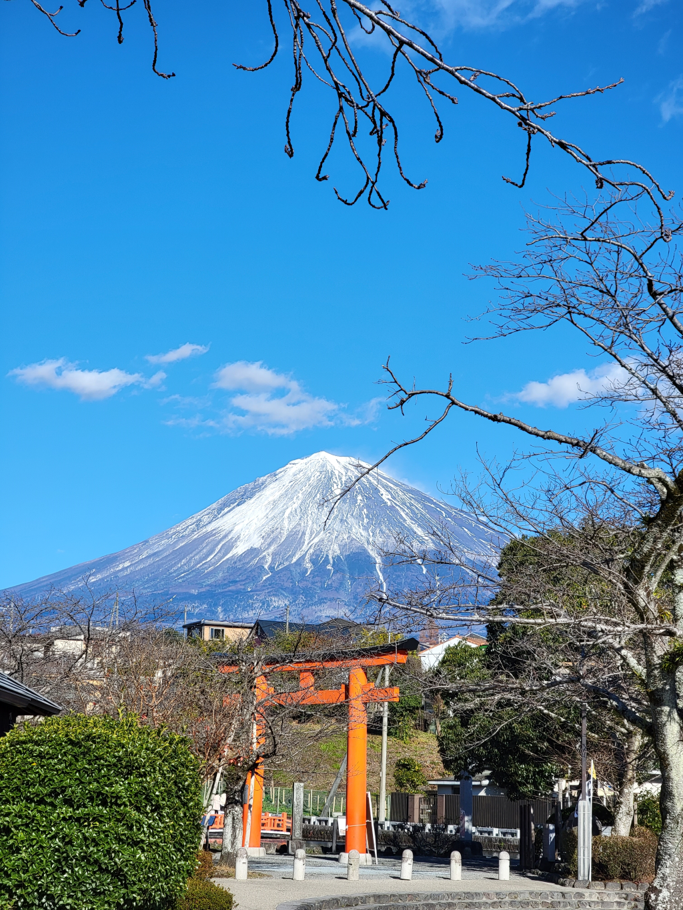
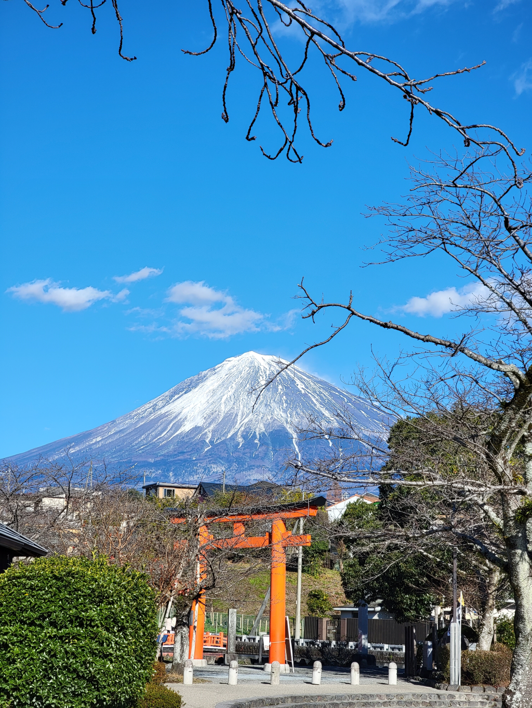
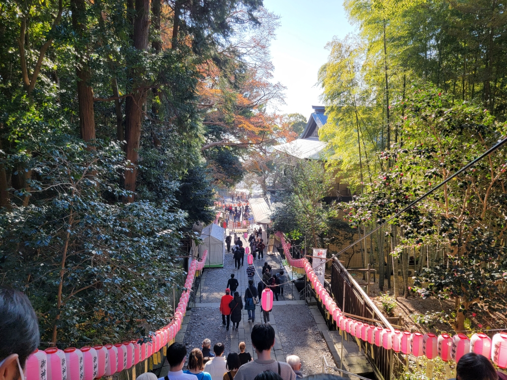
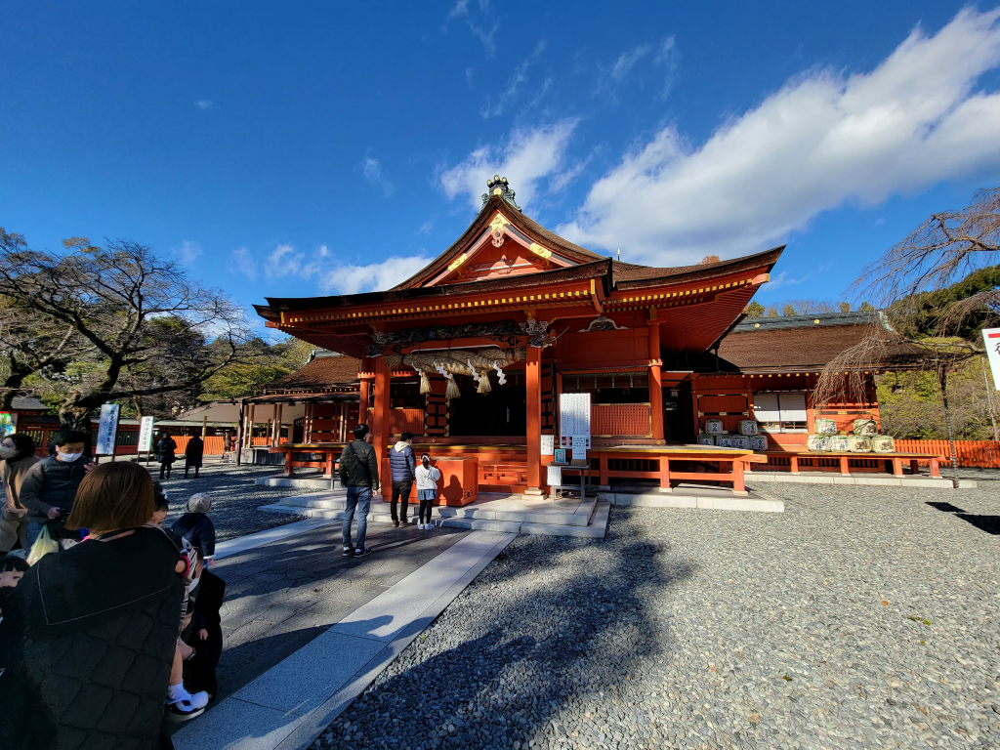
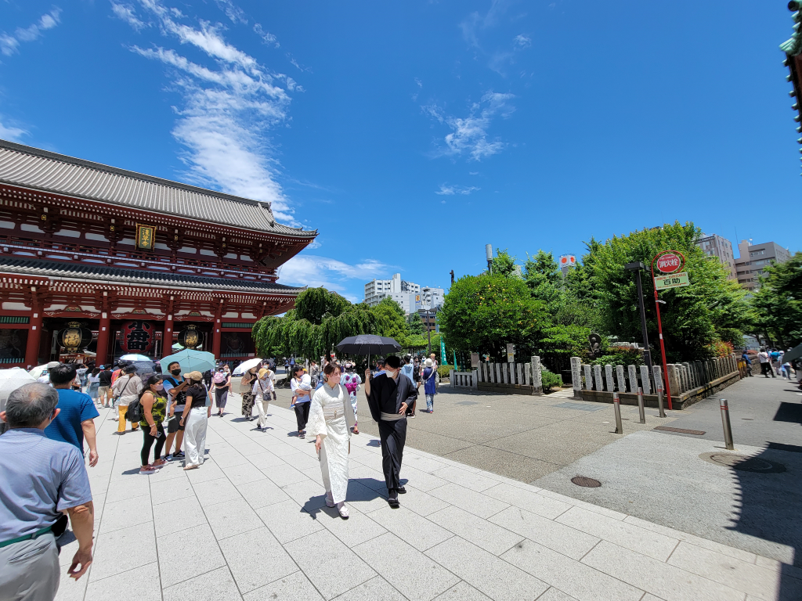

Japan is one of the most unique places in the world for holding most of it´s traditions… But, what traditions exactly? Well, why don’t we take a look at the reasons we should visit this coming trip. Japan has so may outstanding sites. Why not visit the castles for example? There use to dwell many important people like samurais and even the emperor himself.
There has been so much change in Japan that if you decide to visit Kyoto and Tokyo (no they are not the same place) You can experience the change that has been going on over the years. Houses more then 400yrs old and of course you can´t ever let behind the food and the people themselves that make this all a very special journey. If you want to experience special events like Hanami (Cherry Blossom Festival) then we will give you the best timing to see the beautiful sceneries in March and May.
Why not visit the Nachi Ougi Matsuri (Nachi Fire Festival). Its not as common as most festival. Hence the stone staircase leads to Nachi Waterfall with a beautiful surrounding. It is said that Nachi Ougi Matsuri is a Shinto ritual where 12 portable shrines representing 12 divine spirits of the waterfall are purified by flaming torches. This must be spectacular to see in first hand and we will take you there without a doubt.
